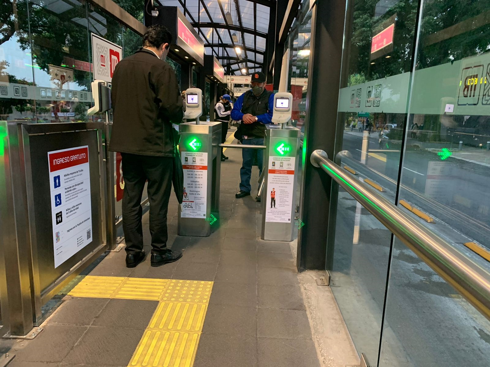

Integration:
A unified contactless card system and increasingly coordinated timetables simplify interchanges between Metro, Metrobús, and other modes.
Clearer wayfinding at shared stations, shaded and traffic-calmed walking links, and bike parking expand the reach of each corridor.
As more services align fare media and transfer policies, door-to-door trips become faster, predictable, and easier to plan.

Equity & Access
High-capacity transit can widen opportunity by shrinking travel times to jobs and schools, but many peripheral neighborhoods remain beyond comfortable walking distance.
Priority projects should focus on first-/last-mile connections. Safer crossings, improved sidewalks, feeder buses, and bike links is crucial to maximum the capacity and potential for mass transit.
So riders do not face a “last barrier” between home and the network.
Accessibility retrofits—ramps, elevators, tactile paving—help ensure the system works for all ages and abilities.
Climate & Public Space
Mode shift from cars to Metro and Metrobús lowers carbon emissions, reduces congestion, and frees street space for safer walking and cycling.
Streetscape around stations such as trees, shade, seating, and storm water management features, create cooler microclimates and dignified the waiting areas.
As fleets transition toward cleaner propulsion, operational emissions fall while air quality improves along high-traffic avenues.
Operations, Resilience & Maintenance
Keeping a megacity moving depends on core basics: preventative maintenance, parts availability, and incident response.
Investments in power redundancy, drainage, and monitoring systems help the network cope with heavy rains and service disruptions.
Transparent performance reporting and rider feedback loops build trust, guiding targeted fixes where they matter most.
Moving Forward
The next chapter emphasizes reliable core service, zero-emission surface fleets, and equitable coverage in underserved areas. Completing orbital links, strengthening interchanges, and upgrading stations will unlock faster cross-city travel while supporting safer streets and more vibrant public spaces. Metro plus Metrobús—reinforced by walking and cycling—form the backbone of a healthier, more connected, and more resilient Mexico City.